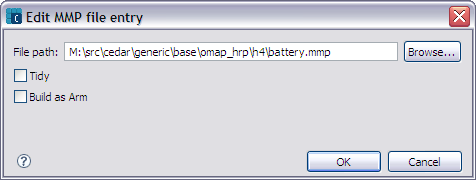

INF Editor - Add / Edit MMP File
Add MMP file dialog
The Add MMP file dialog (figure 1) is used to add a mmp file and, if desired, apply the Tidy attribute or specify the Build as ARM option to the mmp file. Options include:
- Tidy - Specify the tidy attribute if the release that an .mmp file defines is internal to your component and not required by other components or for your component to execute.
- Build as ARM - Specifies the build_as_arm statement, which instructs an ARMV5 build to build the project for the ARM instruction set and not the THUMB instruction set.

Figure 1 - Add MMP file entry
Edit MMP file entry dialog
The Edit MMP file entry dialog (figure 2) allows you to change the file path and set the Tidy or Build as ARM option for the selected mmp file.

Figure 2 - Edit MMP file entry
Related references